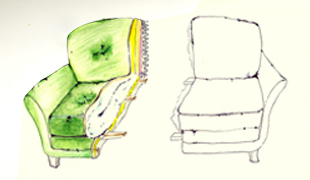

This sofa records the presence of a person using shapes and indentations. The sofa plays the memory back with a higher frequency in the person's absence as a nostalgic gesture that it is trying to remember the person.


I finished this piece with a scale model by Arduino, and a silent scenario prototype by two beautiful actors.